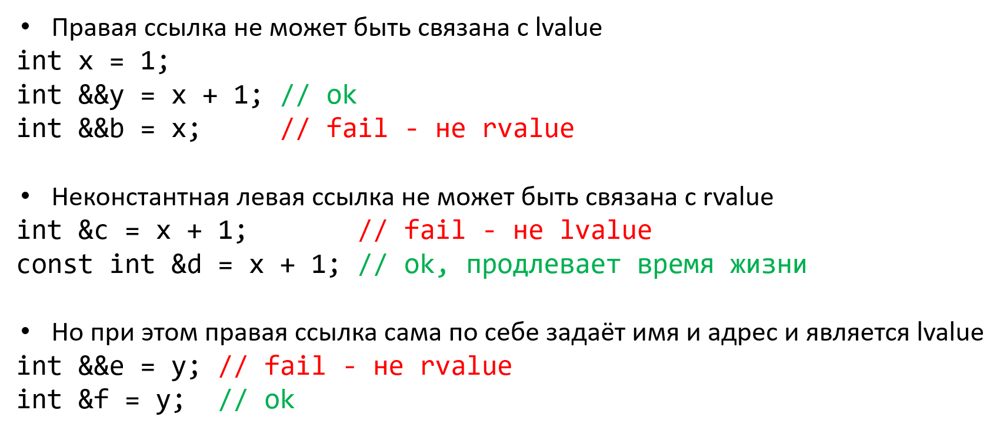

Копирование и перемещение
Тимофеев Александр Алексеевич
Что можно сделать с Empty?
Магия!
Копирование объектов
Копирование по умолчанию
Конструктор копирования
Не-явное копирование
Семантика ссылок
Кросс-связывание

Конструктор перемещения
Практика